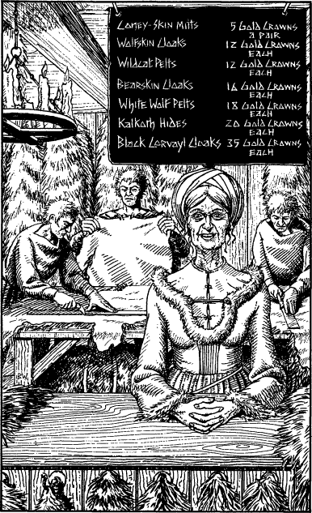

226
You tether your horse’s reins to a peg beside the door and step into the welcoming warmth of the furriers’ shop. Immediately you are assailed by the greasy stench of the furs which fill this emporium. They hang in rows from ornate brass hooks driven into the wooden walls and ceiling rafters, sorted by size and type. Three young men, all strikingly similar in looks, are busy trimming wolf pelts at a work bench. Behind the counter stands a grey-haired old woman with a straight back and clear, milky-white skin. She smiles and asks if you wish to buy or sell furs.
‘Neither, madam,’ you reply, politely, ‘I’m trying to find my way to an inn called the Crooked Sage.’
‘Oh, you are, are you?’ she mumbles, disappointedly, her welcoming smile fading as she abandons hopes of striking up a deal with you. Then her smile returns and she says, ‘Well, sir, I’ll be glad to tell you … but only if you buy something first. If you won’t buy any of my furs, then I’ll sell you the information you want for five Gold Crowns. What do you say?’

Without replying, you step away from the counter and look up. On a square of black slate hanging above the old woman’s head are chalked the following items and prices:
| Item | Price |
|---|---|
| Coney-skin Mitts | 5 Gold Crowns a pair |
| Wolfskin Cloaks | 12 Gold Crowns each |
| Wildcat Pelts | 12 Gold Crowns each |
| Bearskin Cloaks | 16 Gold Crowns each |
| White Wolf Pelts | 18 Gold Crowns each |
| Kalkoth Hides | 20 Gold Crowns each |
| Black Corvayl Cloaks | 35 Gold Crowns each |
All of the above furs are Backpack Items. If you wish to purchase any (or should you decide to pay 5 Gold Crowns for directions to the Crooked Sage), deduct the appropriate amount of Gold Crowns and adjust your Action Chart accordingly. Then, turn to 174.
If you decide not to buy any furs or pay for the information, turn instead to 77.